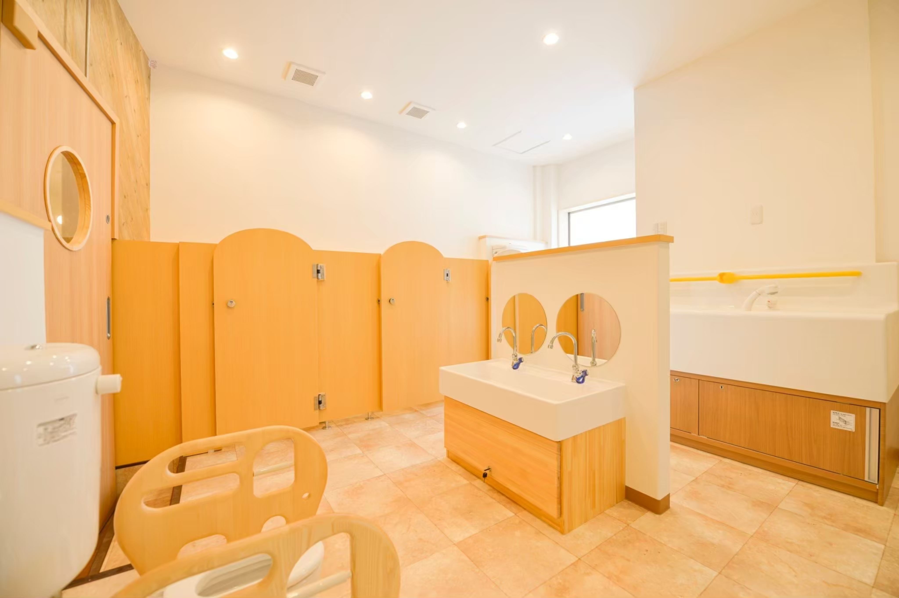
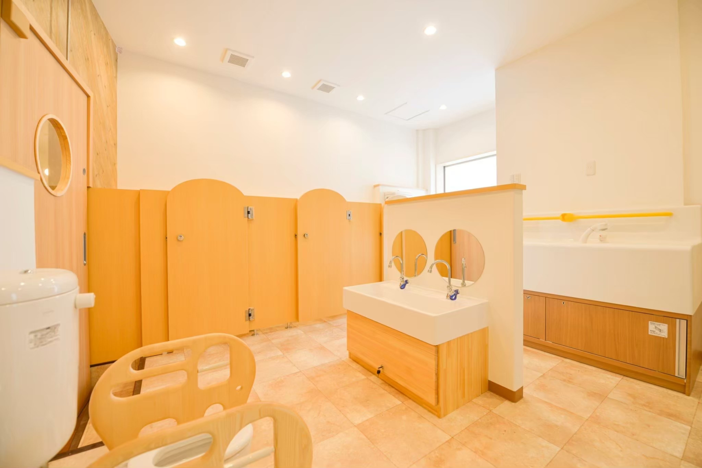

INTERVIEW
先輩たちの声
福ベーグルグループで働いている先輩たちの声と応募者の方へのメッセージを集めました。
荒木 早紀
| 職種･役職 | 正社員 |
|---|---|
| 職種･役職 | 2023/1 |
| 生年月日 | 1997/5/30 |
| 出身 | 群馬県 |
| 前職 | 左官職人 |
私について
はじめまして！私は休日、夫と休みが合えばよく釣りに行っています。基本、平日休みなので、一人で過ごすことが多く、映画や買い物など、出かけるにも混雑してなくストレスフリーです！
私の働き方
高崎店にお客として通っていた頃、ちらりと製造現場も見えていたのですが、スタッフさんたちがイキイキと楽しそうにベーグルを作る姿を見て、興味が沸いたのがきっかけです！将来のことも考え、群馬県内で働きたいという思いと、元々建築系の職人だったこともあり身体を動かした仕事をしたい、という思いから入社を決めました。一福ベーグルのファンでもあったので、その一員として働けている今がとても有り難く思います。実は入社前は女性の職場のイメージは少しネガティブなものだったのですが、実際に働いてみて良い意味で覆りました！
女性に寄り添った職場で、スタッフ同士の助け合いが強く、急なお休みなど、小さなお子様がいても働きやすい環境がある職場です。また、お客様からの嬉しいお声はとても励みになります！
今年の秋、第一子を出産予定なのですが、子供がいてもイキイキと働くスタッフがたくさんいるため、産休育休後も復帰したいと思っています！
応募者の方へメッセージ
20代から50代までと年齢は様々ですが、分け隔てなく、生き生きとした楽しい、女性が働きやすい職場です！！
稲村 美加
| 職種･役職 | マネージャー |
|---|---|
| 入社日 | 2011/8 |
| 生年月日 | 1989/3/27 |
| 出身 | 群馬県 |
| 前職 | 事務職 |
私について
5歳と2歳の子供を育てながらマネージャーとして仕事をしています。
今は子供の成長をそばでみていられることが何より幸せな時間です。
毎日怒ってばかりな母ちゃんですが笑
それでも『ママ大好き〜』と言ってくれる子供たちに支えられ、感謝する日々です。
子供たちも福ベーグルが好きで下の子は2歳にして福ベーグルのロゴマークを見ると「ベーグル！」と言っています♪
私の働き方
前の職場から転職する際に「パン屋さんで働いてみたいな〜！ベーグルってどんなものなんだろう？」というところからのスタートでした。2011年の福ベーグルのオープン時に入社し、そこから店長を経て今は2人の子供の子育てをしながらマネージャーとして時短で働いてます。仕事に家事育児と目まぐるしく過ぎていく毎日ですが、その中でも仕事へのやりがいやワクワクを持って毎日を過ごせています。福ベーグルで働くようになってからたくさんの方たちとの出会いがあり、困難なことも周りの人たちのおかげで乗り越えてこられ、自分自身も成長してこられました。
応募者の方へメッセージ
一見、難しいかな？と思うことも福ベーグルチームでは不可能を可能にできることが多いです。私自身も第一子出産の頃に仕事を続けるか辞めるのか悩んでいた時に代表が産休育休を取れる仕組みを提案してくれて出産を経て仕事復帰する事ができました。「〇〇だからできない」を「どうしたらできるか？」に切り替えられる会社です。働くスタッフたちは女性ばかりなので悩みも相談しやすい環境がありますし、20代のフリーターさんから50代の主婦層の方まで様々なスタッフがいるからこそいろんな価値観で学べることが多いです。それぞれが考え、実行できる会社なのでスキルアップをしていきたい人にはとてもぴったりな職場です！まだまだ福ベーグルも成長途中です。あなたの自己成長と共に福ベーグルを更に価値ある会社にしていきませんか？
内田 綺音
| 職種･役職 | 正社員 |
|---|---|
| 入社日 | 2021/8 |
| 生年月日 | 1998/12/12 |
| 出身 | 群馬県 |
| 前職 | アパレル |
私について
最近はまっているのはK-POPです！先日は大阪のライブに参加してきました。職場にも同じ趣味のスタッフさんがいるので、いつも会話が弾んでいます！
私の働き方
2021年に前橋南町店のオープニングスタッフとしてパートで入社。1年後に高崎店に移り、つい先日社員として働くことを決めました！
正社員になった決め手は、今、働いているスタッフと今まで以上に力を合わせスキルアップしたい！思ったからです。
福ベーグルはどこの店舗もスタッフが元気で優しく、発言がしやすい雰囲気です。元々、自分の意見を積極的に発言する方ではないのですが、入社してからはコミュニケーションを取るのが楽しいです。
また、新商品の開発もスタッフが考えて試作するので、自分が考えた商品が販売される時はとてもやりがいを感じます！そんな商品を遠方からも楽しみに買いに来てくださり、笑顔でベーグルを選ぶお客様の姿を見ると、自分達も笑顔になります。
これから福ベーグルの一社員として店舗のさらなる品質向上やお店づくりに携わり貢献していきたいです！
応募者の方へメッセージ
20代から50代までと年齢は様々ですが、分け隔てなく、生き生きとした楽しい、女性が働きやすい職場です！！
加藤 めぐみ
| 職種･役職 | 福ベーグルSTARS店長 |
|---|---|
| 入社日 | 2016/1 |
| 生年月日 | 1980/8/31 |
| 出身 | 群馬県東吾妻町 |
| 前職 | 株式会社キャンドゥ店舗責任者 |
私について
趣味は木工クラフトです。時おりマルシェに出品しています。
美味しいコーヒーを飲む時間が好きです。
子供は高校生、中学生、小学生の３人です。
休日は我が子のサッカー送迎と応援をして過ごしています。
私の働き方
以前はグループ会社のARIGATOCOMPANYに所属していました。EC事業が本格化し、増えて行く業務を就労支援事業所のパートナーさんと共に進めて行くことになった際、梱包・出荷の作業に手伝いに入る形となりました。また、就労支援事業所との共同運営のカフェが開設となり、本格的に福ベーグルに関わることになりました。新しいことが始まる際に、会社や人を繋ぐ仕事をしています。 以前は大きな会社で、10年以上店舗責任者として働いていました。会社のマニュアルも整っておりやりがいのある仕事でした！そこから比べると規模感は小さい御社に入社して、私が1番感じている変化は自分の考え方を広げられるようになったことです。「こうではなければならない」という発想から「こうでもいいのではないか？」という選択肢を見出せるようになったことで、新たな可能性を生み出せるようになりました。 自由に仕事できる分、責任が大きかったり、初めて挑戦することも多く試行錯誤の毎日ですが、一人一人の可能性が広がる会社だと思っています！
応募者の方へメッセージ
焼きたてのベーグルの香りに包まれて仕事をしていると、とても幸せな気持ちになります。また、数多くの方が福ベーグルのファンでいてくださることが誇りです。一緒に福を包んで、たくさんの方に幸せを届けてみませんか。
髙尾 明音
| 職種･役職 | マネージャー |
|---|---|
| 入社日 | 2016/6 |
| 生年月日 | 1996/3/8 |
| 出身 | 群馬県 |
| 前職 | 大学生 |
私について
今年第一子を出産し育休中です。 田舎で育ってきたからか、自然が好きです。科学系のことに興味があり、最近は家事や育児の傍ら動画をみたり時々読書したりしています。 学生の頃スポーツをしていて、体を動かすのが好きなのですが、産休に入った頃からは散歩にはまり、毎日2・3時間歩いていました…！！今は息子を抱っこしながら、犬の散歩を楽しんでいます。
私の働き方
体調を崩して大学を中退後、今後どうしたらいいかわからないけれど、まずはやりたいことをやってみよう、と思い、パートで入社しました。そのころは今よりもずっと少人数の会社でしたが、働いているスタッフは様々な価値観を持って生き生きと働いていて、そして社長の持つビジョンに共感して正社員になることを決めました。振り返ればこの7年間、試行錯誤の繰り返しで、それすらできずに行き詰まることもありました。その度、他の仲間に支えてもらって続けて来ました！ 福ベーグルで働いている中で、自分のライフステージは変わってきましたが、様々な立場の女性が働いていて、いろんな経験を積んできた方も多いため、話を聞いてもらったり聞いたりしながら、変化を楽しんでこれたように思います。 数ヶ月後に職場復帰、今度は子供もいる中で働くことになりますが、福ベーグルと一緒に自分自身も成長していきたいと思っています！
応募者の方へメッセージ
『女性の活躍する場所を作る！』という思いを持って働いているスタッフがたくさんいるため、働きやすい職場です。それぞれが責任を持ちながらも、笑顔で仕事に取り組んでいるので、社内でコミュニケーションが取りやすかったり、自分の強みを発揮できる会社だと思っています！ 何かに挑戦してみたい方、自分のライフステージに関わらず生き生きと働いていきたい方、ぜひ一緒に福ベーグルで働きませんか。ワクワクしますよー！
平沼 美咲
| 職種･役職 | 正社員 |
|---|---|
| 入社日 | 2023/1 |
| 生年月日 | 1998/11/24 |
| 出身 | 埼玉県 |
| 前職 | パティシエ |
私について
趣味はカフェやケーキ屋さんを巡ることです。 前職でパティシエをしていて、スイーツを作る事、食べる事が大好きです！おしゃれなお店をInstagramやネットで調べて行くのですが群馬県にも行ってみたいと思ったカフェがたくさんあって、休日は車でよく訪れていました。これが群馬県に引っ越してきた理由の１つでもあります。 今の楽しみは一緒に働いているパートさんにおすすめのお店を教えてもらって、休みの日に実際に行ってみたり情報共有しあうことです！ また、福ベーグルで働き始めてからベーグルにハマって、日々まかないで食べていたところ、少し体重が増えてしまったため、ジムに通い始めました。笑
私の働き方
私が福ベーグルを知ったきっかけは、高崎駅でベーグルを買ったことでした。こんなにおいしいベーグルは初めて！と感動し、本店の高崎店に行きました。そこで、アットホームな雰囲気で生き生きと楽しそうに仕事をしているスタッフさんの姿を見て、私もあんな風に働きながら、おいしいベーグルをたくさんの人に届けたい！と思い、入社しました。 入社してからはベーグルの製造・販売と、覚える事もたくさんあり大変でしたが、ベーグル作りは楽しく、もっと極めたい！と思うようになりました。実際に店舗に立ってみて常連さんや初めて来店されたお客さんが楽しそうにベーグルを選んでいる姿を見て、さらにたくさんの人に福ベーグルを知って欲しいという思いから、ベーグル作りを頑張っています！ また、入社して気がついた福ベーグルの面白いところは、社員はもちろんパートさんも新商品の開発をしているところです。お子さんのいるパートさんもお母さんという目線に立って商品を考えていたりと、スタッフみんなでお店を作り上げています！私も、商品開発に興味があるため、今後はさらに力を入れていきたいと思っています。
応募者の方へメッセージ
お子さんのいるスタッフや主婦さんも多く、女性が長く活躍して働ける職場です！不安もあると思いますが先輩のサポートも厚く毎日楽しく働けるそんな場所です。私達と一緒においしいベーグルを作っていきましょう！
峯岸 亜紀
| 職種･役職 | 工房長・店長 |
|---|---|
| 入社日 | 2020/7 |
| 生年月日 | 1978/1/21 |
| 出身 | 群馬県高崎市 |
| 前職 | 接客業 |
私について
シングルマザーで障害を抱えている子供を育てながら働いています。 お菓子作りなど得意ではないですが物を作ることが好きです！また、バイクでツーリングに行くことや、お肉・甘いものも好きです。
私の働き方
福ベーグルは私の親友が立ち上げたお店でオープンした時から知っていました。コロナの時期に働いていた会社が倒産して困っているときに声をかけてもらい働き始めました。最初はパートで入り社員にならないかと誘っていただき、初めは子供のことがあったので迷っていましたが、時間などの調整で協力していただける環境だったので社員になることを決めました！ 今までは子育てをしながら合間を縫って働いていたので、Wワークやトリプルワークだったのですが、福ベーグルではフレックスタイム制で働いているため、自分の時間も取れています。 自分自身子供が小さい頃、子供の体調不良で仕事を休まなければならないことが多く、働きづらさを感じていました。そんな経験からベーグルで働くお母さんたちに、生き生きと働いてもらう為に工房長・店長として働く環境を整えています。
応募者の方へメッセージ
女性だけの会社なので、子育てにはとても理解のある会社です。働き方もみなさんそれぞれで協力しながら楽しく働いています！ 子育てに不安のある方など、先輩ママのアドバイスが聞ける点も、とてもいい環境です。
RECRUIT
未経験からでも勇気を持って始めたスタッフも 多いです！一緒に活躍していきませんか？